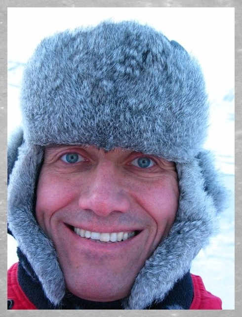
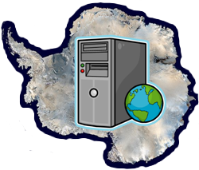

グレーベ ラルフ (Ralf GREVE)

教授
地球圏科学専攻 雪氷・寒冷圏科学コース
greve
 lowtem.hokudai.ac.jp
lowtem.hokudai.ac.jp
Ralf Greve's Homepage
About me & my research

私はドイツのダルムシュタット出身で、2004年に北海道大学へ来ました。主な研究は数値モデルとコンピューターシミュレーションを使ったグリーンランドや南極のような大規模氷河、それらよりも規模の小さい氷河も含めた氷床の進化と動力学に関することです。これは興味の尽きないトピックで、特に地球規模の変化という状況で、地球のシステムを理解するうえで重要な役割を担っています。さらに、火星の極氷冠のような地球外にも興味を持っています。
I am from Darmstadt, Germany,
and I have joined Hokkaido University in 2004.
My work is mainly concerned with the evolution and dynamics of large ice
sheets like Greenland and Antarctica as well as smaller glaciers, by means
of mathematical modelling and computer simulations. This is an ever-fascinating
topic which plays a major role for understanding the earth system, especially
in the context of global change. Also, I am interested in extraterrestrial
ice masses like the polar ice caps on Mars.
Students wanted...
... 柔軟で、コンピューターによる気候科学の研究を遂行する意欲のある学生を歓迎します。これまでの専門はあまり重要ではありませんが、ある程度のレベルの微積分と線形代数は必要不可欠です。さらにプログラミング言語(Fortranが好ましいが、CやMATLABでも良い)は必須、またはコース初めに習得してください。
... who, first of all, are open-minded and show some enthusiasm
for carrying out research into this complex, interdisciplinary field
of computational climate science. The previous study specialization is less
important; however, some level of comfort in calculus and linear algebra is indispensable.
Further, good knowledge of a procedural programming language (preferably Fortran,
alternatively C or MATLAB) is required or must be obtained early during the course.